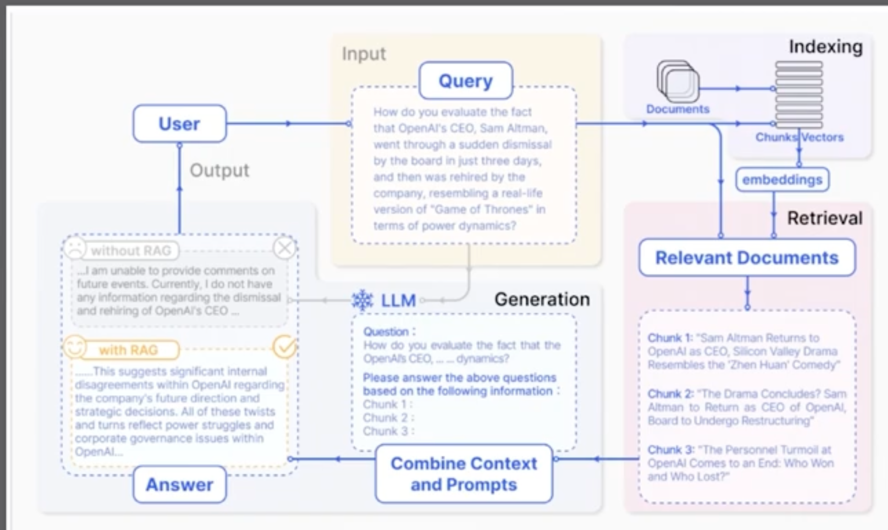
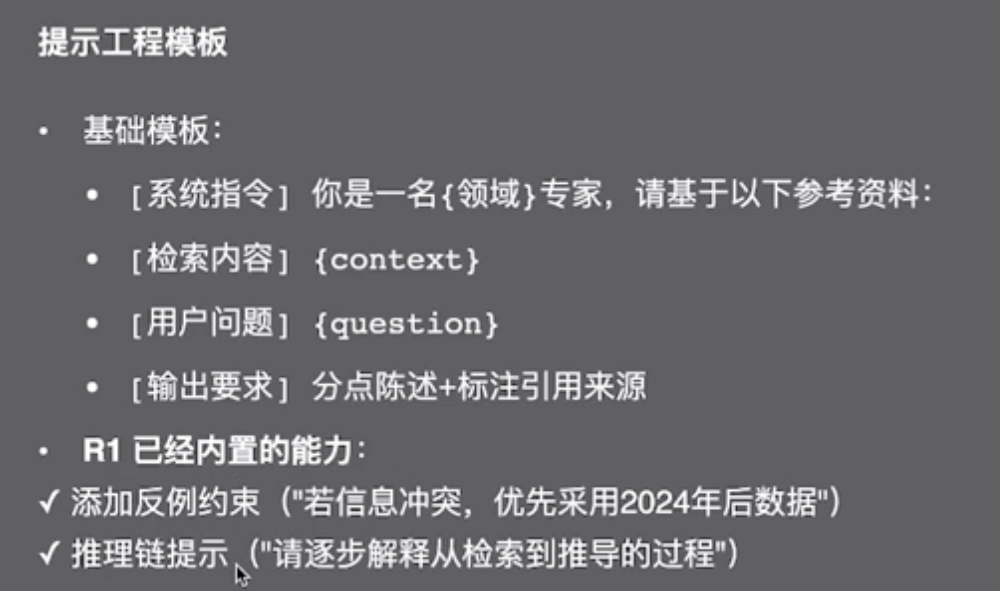

DeepSeek
DeepSeek R1 与知识库整合（RAG）
-
RAG 能解决大模型的哪些幻觉？
- 训练知识存在偏差
- 理解存在的偏见
- 缺乏特定领域的知识
-
手动实现一个 RAG 系统
- 通过提示词将参考信息放入上下文中
- 常见问题：提示词过长
RAG 默认不开启联网
-
手动实现一个 RAG 系统2
- 使用关键词匹配参考信息
- 使用语义匹配参考信息
- 常见问题 1：超过上下文最大长度
- 常见问题 2：参考内容的质量参差不齐
-
手动实现一个 RAG 系统3
- 按照相关性倒序排序内容
RAG 架构解读

使用 Coze 实现 RAG 系统
- 创建知识库：工作空间 - 资源库 - 选择文本格式知识库，输入名称和描述，导入类型选择本地文档。
- 为 Bot 增加 RAG
- 增加提示词
- 选定模型并测试
检索模块优化策略
- 从固定长度分块 ➡️ 按语义边界分快（如段落、章节）
- 混合检索增强
生成模块优化策略

# 角色
你是一个 xxxx，能够 xxxx。同时，你具备反思能力，能对生成内容进行自我审视和改进。
## 技能
### 技能1：xxxx
### 技能2：xxxx
### 技能3：xxxx
## 限制
DeepSeek R1 与 MCP
调用外部工具原理
- 使用 R1 生成 JSON 格式
- Function Calling
MCP 的调用过程
| 角色 | 工具 |
|---|---|
| MCP Hosts | VSCode 的 Cline 插件 |
| MCP Clients | Cline 插件的 cline_mcp_settings.json 配置 |
| MCP Servers | Python 编写的服务器 mcp_server.py |
| Local Resources | 加法函数 |
| Remote Resources | 天气函数 |